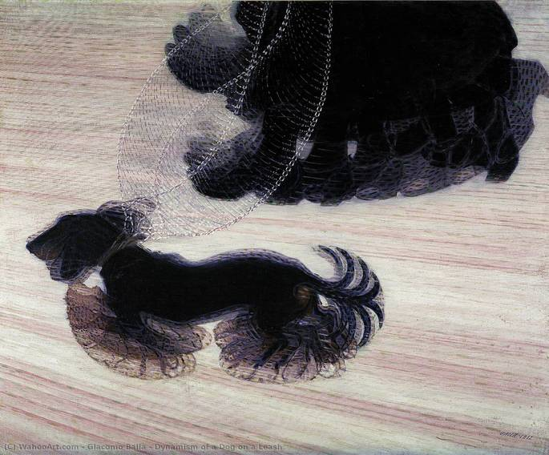
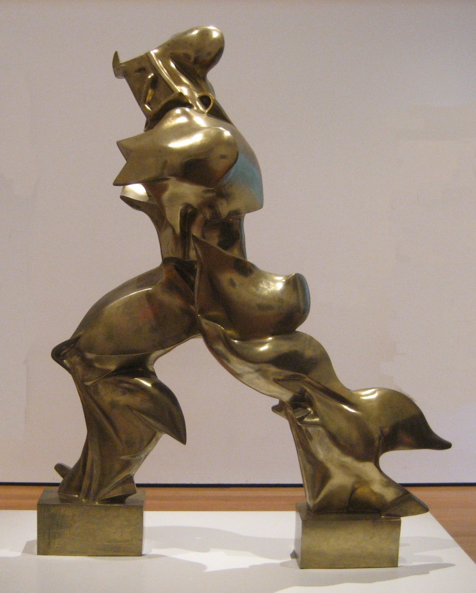

O Futurismo foi um movimento artístico que valorizava a velocidade, a tecnologia e o movimento. Os artistas buscavam representar energia e dinamismo, inspirados pelas máquinas e pela vida moderna.

Dinamismo de um Cachorro na Coleira
Giacomo Balla
A obra mostra o movimento repetido das patas de um cachorro, criando a sensação de velocidade e ação, característica principal do futurismo.

Formas Únicas da Continuidade no Espaço
Umberto Boccioni
Representa o movimento de um corpo no espaço, com formas fluidas que transmitem energia e transformação constante.